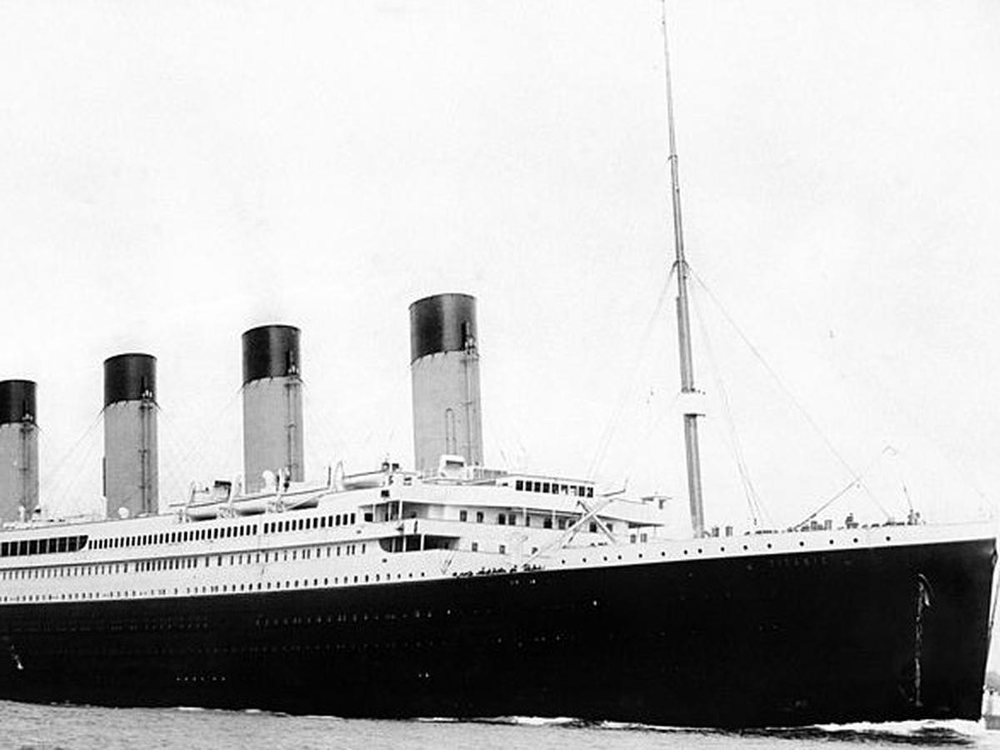

Titanic - Machine Learning from Disaster

Data Science Solutions
This notebook is a companion to the book Data Science Solutions.
The notebook walks us through a typical workflow for solving data science competitions at sites like Kaggle.
There are several excellent notebooks to study data science competition entries.
However many will skip some of the explanation on how the solution is developed as these notebooks are developed by experts for experts.
The objective of this notebook is to follow a step-by-step workflow, explaining each step and rationale for every decision we take during
solution development.
The competition solution workflow goes through seven stages described in the Data Science Solutions book.
Workflow stages
- Acquire training and testing data.
- Wrangle, prepare, cleanse the data.
- Analyze, identify patterns, and explore the data.
- Model, predict and solve the problem.
- Visualize, report, and present the problem solving steps and final solution.
- Supply or submit the results.
The workflow indicates general sequence of how each stage may follow the other. However there are use cases with exceptions.
We may combine mulitple workflow stages. We may analyze by visualizing data.
Perform a stage earlier than indicated. We may analyze data before and after wrangling.
Perform a stage multiple times in our workflow. Visualize stage may be used multiple times.
Drop a stage altogether. We may not need supply stage to productize or service enable our dataset for a competition.
Question and problem definition
Competition sites like Kaggle define the problem to solve or questions to ask while providing the datasets for training your
data science model and testing the model results against a test dataset. The question or problem definition for Titanic Survival
competition is described here at Kaggle.
Knowing from a training set of samples listing passengers who survived or did not survive the Titanic disaster,
can our model determine based on a given test dataset not containing the survival information,
if these passengers in the test dataset survived or not.
We may also want to develop some early understanding about the domain of our problem.
This is described on the Kaggle competition description page here. Here are the highlights to note.
On April 15, 1912, during her maiden voyage, the Titanic sank after colliding with an iceberg, killing 1502 out of 2224 passengers and crew. Translated 32% survival rate.
One of the reasons that the shipwreck led to such loss of life was that there were not enough lifeboats for the passengers and crew.
Although there was some element of luck involved in surviving the sinking, some groups of people were more likely to survive than others, such as women, children, and the upper-class.
Workflow goals
The data science solutions workflow solves for seven major goals.
- Classifying. We may want to classify or categorize our samples. We may also want to understand the implications or correlation of different classes with our solution goal.
- Correlating. One can approach the problem based on available features within the training dataset. Which features within the dataset contribute significantly to our solution goal? Statistically speaking is there a correlation among a feature and solution goal? As the feature values change does the solution state change as well, and visa-versa? This can be tested both for numerical and categorical features in the given dataset. We may also want to determine correlation among features other than survival for subsequent goals and workflow stages. Correlating certain features may help in creating, completing, or correcting features.
- Converting. For modeling stage, one needs to prepare the data. Depending on the choice of model algorithm one may require all features to be converted to numerical equivalent values. So for instance converting text categorical values to numeric values.
- Completing. Data preparation may also require us to estimate any missing values within a feature. Model algorithms may work best when there are no missing values.
- Correcting. We may also analyze the given training dataset for errors or possibly innacurate values within features and try to corrent these values or exclude the samples containing the errors. One way to do this is to detect any outliers among our samples or features. We may also completely discard a feature if it is not contribting to the analysis or may significantly skew the results.
- Creating. Can we create new features based on an existing feature or a set of features, such that the new feature follows the correlation, conversion, completeness goals.
- Charting. How to select the right visualization plots and charts depending on nature of the data and the solution goals.
Refactor Release 2017-Jan-29
We are significantly refactoring the notebook based on (a) comments received by readers,
(b) issues in porting notebook from Jupyter kernel (2.7) to Kaggle kernel (3.5),
and (c) review of few more best practice kernels.
User comments
Combine training and test data for certain operations like converting titles across dataset to numerical values. (thanks @Sharan Naribole)
Correct observation - nearly 30% of the passengers had siblings and/or spouses aboard. (thanks @Reinhard)
Correctly interpreting logistic regresssion coefficients. (thanks @Reinhard)
Porting issues
Specify plot dimensions, bring legend into plot.
Best practices
Performing feature correlation analysis early in the project.
Using multiple plots instead of overlays for readability.